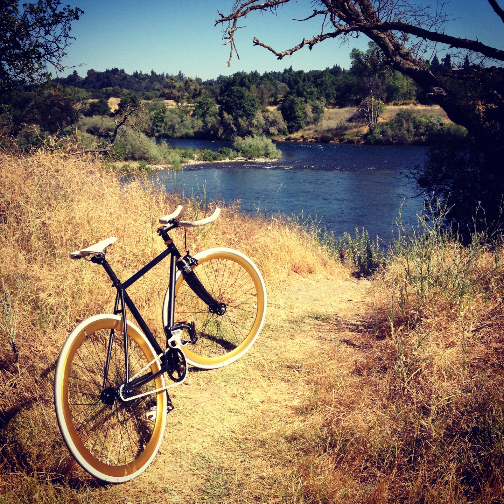

SWALLOW WHATS AROUND YOU
ABOUT US

The Natures Digest has been inspiring people to care about the planet since 1888. It is one of the largest nonprofit scientific and educational institutions in the world. Its interests include geography, archaeology and natural science, and the promotion of environmental and historical conservation. The Natures Digest has been inspiring people to care about the planet since 1888. It is one of the largest nonprofit scientific and educational institutions in the world. Its interests include geography, archaeology and natural science, and the promotion of environmental and historical conservation.The Natures Digest has been inspiring people to care about the planet since 1888. It is one of the largest nonprofit scientific and educational institutions in the world. Its interests include geography, archaeology and natural science, and the promotion of environmental and historical conservation.The Natures Digest has been inspiring people to care about the planet since 1888. It is one of the largest nonprofit scientific and educational institutions in the world. Its interests include geography, archaeology and natural science, and the promotion of environmental and historical conservation.
NATURES DIGEST, N.A. Member FDIC. Equal Housing Lender opens in a new window © 2015 Condenast Publication. All rights reserved. Glossary Term: Unsolicited Idea Submission Policy